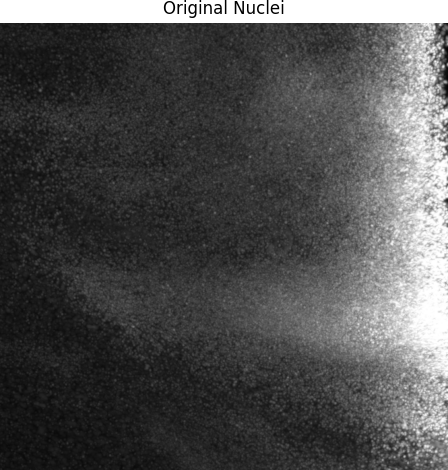
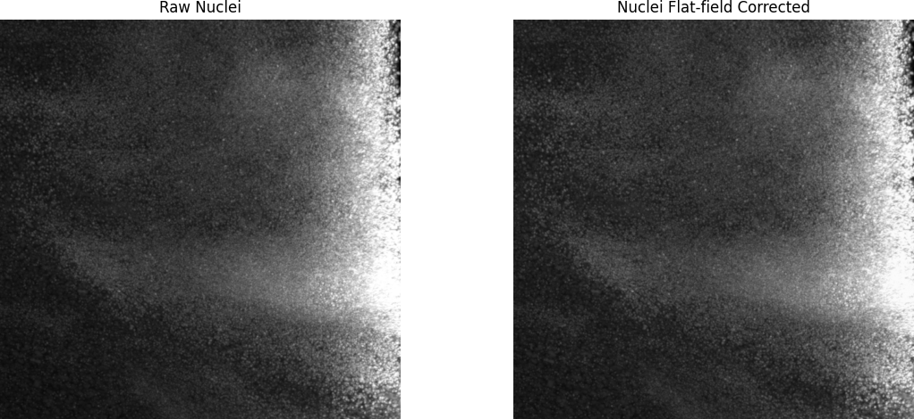
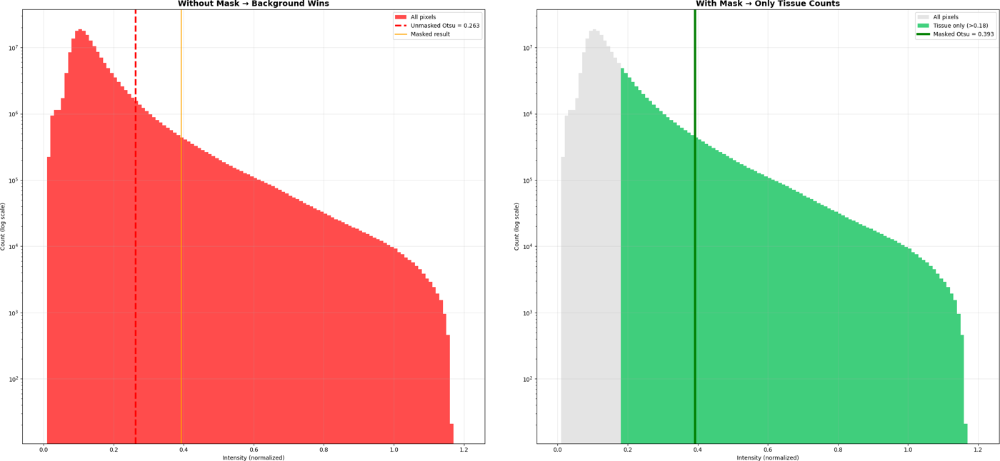
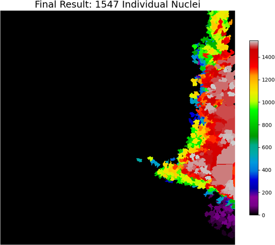

Engineering Portfolio
Tahmid Ul Huq
Biomedical engineer working across hardware, signal processing, and applied machine learning: wearable sensors and electrode interfaces, microfluidic diagnostics, biomedical computer vision, and EEG-based neural interfaces — from SolidWorks CAD and fabrication through to data pipelines and classifier evaluation. I'm also Director and co-founder of a medtech startup building AI-assisted IV training tools, and Project & Operations Lead at an ed-tech company in Hong Kong. The notes below follow the same what/how structure I use in my own lab notebooks.
Relevant coursework
- Global Medical Device Regulatory Affairs
- Wearable Biomedical Devices & Personalized Healthcare
- EEG acquisition & brain-computer interfaces
- Medical device design, prototyping & technical documentation
- Final Year Project I & II (microfluidics)
The regulatory affairs course covered FDA 510(k), EU MDR, and Japan PAL submissions, with hands-on work applying ISO 13485 (quality management), ISO 14971 (risk management), and IEC 60601 (electrical safety) — including selecting the harmonized standard set for a device's own CE technical file. That design-record and V&V documentation discipline carried directly into my Centri Medical internship. ISO 13485 · ISO 14971 · IEC 60601
Wearable Microneedle for Glucose and CVD Detection
Coursework concept design
Concept design — not built
Wearable biosensor architecture
What
- A dual-biomarker wearable microneedle patch for continuous glucose and C-reactive protein (CRP) monitoring via interstitial fluid (ISF), aimed at diabetic cardiovascular disease — glucose as the metabolic marker, CRP as an inflammation marker for cardiovascular risk, read from one integrated PCB.
- Carried from a first design through a second-generation SolidWorks CAD assembly (microneedle array, PCB, rechargeable coil, battery, support and top covers) sized for a wearable form factor.
How
- Needles CNC-machined on PMMA for biocompatibility and mechanical stability, sputter-coated with gold for conductivity, with an Ag/AgCl reference electrode formed by chlorination; working electrode built on an AD5940 electrochemical-analog-front-end PCB.
- Glucose sensing: electrodeposited PPD and immobilized glucose oxidase detect H₂O₂ generated by glucose oxidation, amplified and digitized on-board — the same amperometric, mediator-based detection principle (Prussian Blue-catalyzed H₂O₂ reduction) I ran and calibrated by hand in the companion lab session.
- CRP sensing: neutravidin-anchored CRP antibodies on a separately gold-deposited site, read via electrochemical impedance spectroscopy — CRP binding changes sensor capacitance, with a target detection limit of 0.8 mg/mL in ISF-like medium, drawn from the reference literature behind the design.
- Data transmitted wirelessly from the shared PCB to a connected device for both biomarkers.
This stayed at the system-architecture, literature-review, and CAD stage — through a second generation of the assembly — rather than a physical build. I'm including it because that translation process, from a clinical need and primary literature into electrode chemistry, PCB architecture, and a sensing circuit, is the same kind of thinking a wearable neuromodulation concept needs, even though the sensing modality is different from stimulation.
3D Nuclei Segmentation in Human Liver Tissue
Image-analysis project · two-channel fluorescence volume
Built · result not validated
Registration · correction · segmentation




What
- An image-analysis pipeline for a 3D, two-channel (nuclei + membrane) fluorescence volume of human liver tissue, built to align the channels, remove bleed-through and uneven illumination, and segment individual nuclei so per-nucleus volume can be measured.
- Reported as-is: the registration, crosstalk and segmentation stages run, but the illumination correction did not work, so the final 1,547 labelled objects are not validated nuclei.
How
- Channel alignment: phase correlation on maximum-intensity projections measured the XY shift between channels (only a couple of pixels), then applied it to the whole membrane volume so the pixel-by-pixel crosstalk subtraction compares the same structures.
- Crosstalk: nucleus-shaped dots in the membrane channel were dye bleed-through; the coefficient was estimated by least squares rather than chosen by hand (α = 1.46). An α above 1 is a warning sign, and a unit mismatch in the subtraction was traced and is queued to fix.
- Thresholding: plain Otsu gave 0.263 because ~90% of the volume is empty background and dominates the histogram. Masking out everything below 0.18 and running Otsu on tissue pixels only moved it to 0.393, a more sensible nucleus/background split.
- Segmentation: distance transform, marker detection and 3D watershed behaved as expected on the mask they were given.
What went wrong: the flat-field correction (divide by a Gaussian-blurred background, after 10× downsampling and sigma 30, roughly a 300 px blur on a 670 px image) produced a near-flat background, so it rescaled the image rather than correcting it and the gradient survived. The threshold therefore only cleared in the bright right-hand strip, and the nuclei in the centre of the field were missed. My "gradient removed" profile plot was also invalid evidence: wrong axis, and normalised to 0–1 against raw counts in the thousands. Fix identified: sigma ≈ 10 with no Z downsampling, then re-run; the check will be per-nucleus volumes landing near the 200–500 µm³ the literature reports for hepatocytes.